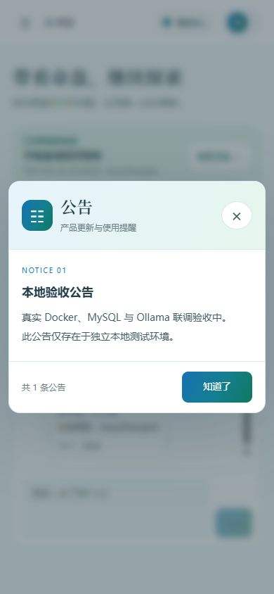
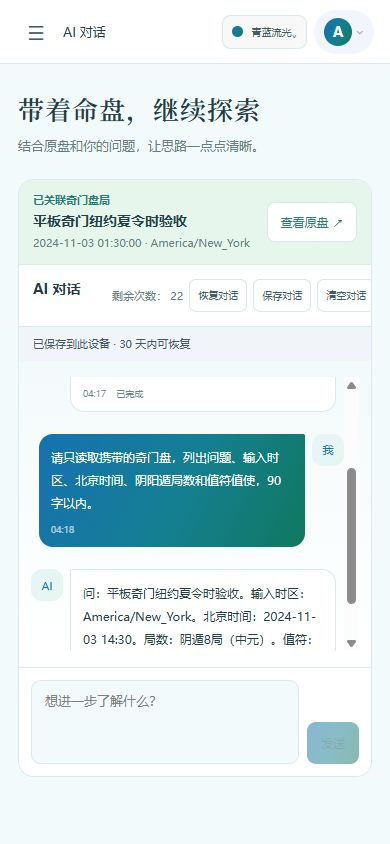
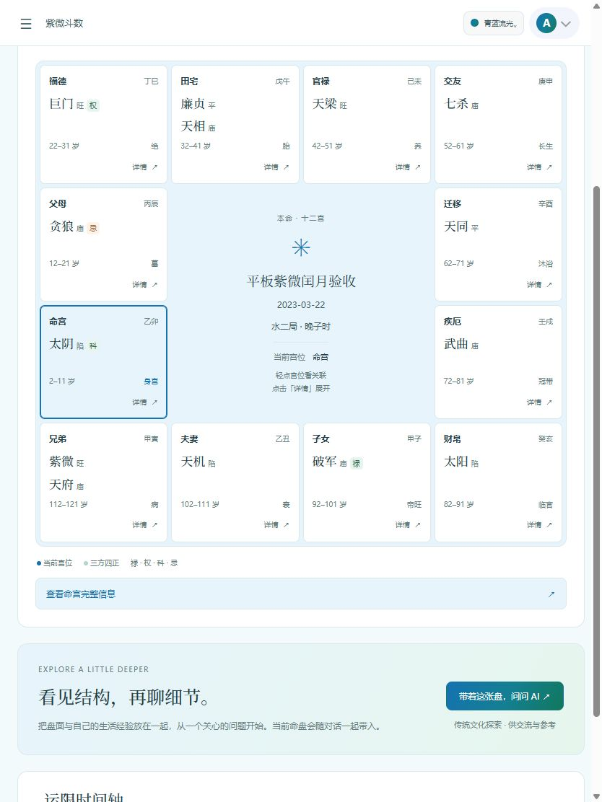
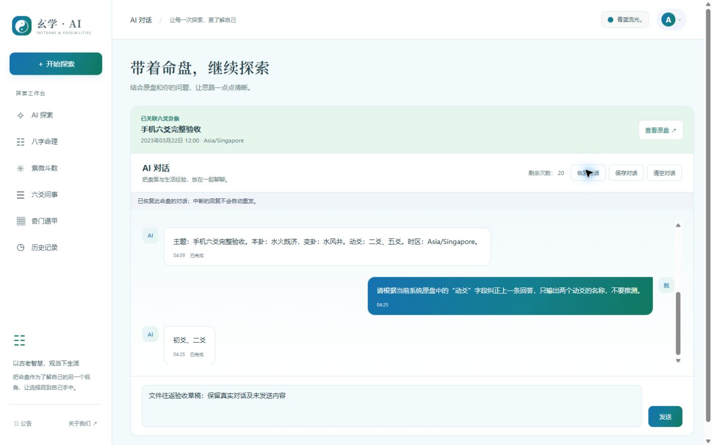

验收结论：本轮本地业务链路及真实文件往返通过。不能据此宣称整个项目“100% 全部验收”。真实文件由用户协助保存，随后自动完成清空、导入和刷新比对；浏览器工具不支持 Blob 下载，未自动捕获下载文件。实体手机、平板、原生端、跨午夜调度、外部 SMTP 送达和生产部署不在本轮已验证范围。
环境保持运行：用户端 · 管理端 · 本地测试邮箱。独立数据库与端口，不影响其他项目容器。测试账号 acceptance_a / acceptance_b；管理员 acceptance_admin；口令与随机密钥仅保存在 gitignored 私有验收目录。
逐项验收
| 功能 | 结论 | 证据与范围 |
|---|
| 环境 | 通过 | 独立 Docker 项目；MySQL 8、Express、Nginx 前台与管理端、Mailpit；宿主机真实 Ollama qwen3.8:latest。没有模拟 API 或模型响应。 |
| 注册与邮件 | 通过 | 真实 SMTP 投递至本地 Mailpit，读取验证码注册两个账号；错误验证码拒绝。未向外部邮箱发信。 |
| 登录与会话 | 通过 | 登录、错误密码、刷新令牌轮换与旧令牌拒绝、退出后刷新失效；普通用户管理接口 403、未登录历史 401。 |
| 八字 | 通过 | 手机输入 2024-02-03 23:30 Asia/Shanghai；23:00 换日；保存、更新、历史重开、真实携盘 AI、加密对话刷新恢复。 |
| 紫微 | 通过 | 平板输入 2023-03-22 23:30；闰二月、晚子时按次日；十二宫与宫位详情、保存、历史重开、携盘 AI。扩大模型上下文后正确读出太阴、水二局及原时区。 |
| 六爻 | 通过 | 手机手工指定六爻，初、二爻动；本卦水火既济、变卦水风井；弹窗、滚动保持、保存与重开；明确动爻字段后真实模型正确答“初爻、二爻”。 |
| 奇门 | 通过 | 纽约 2024-11-03 01:30 取较晚一次，对应北京时间 14:30；阴遁八局、天芮九宫、死门四宫；九宫/列表、保存、历史重开、真实 AI 核对一致。 |
| 时间与算法回归 | 通过 | 349 项前端回归包含时区、子时、闰月、夏令时、历史冻结规则与独立基准相关用例；时间输入 13 月、80 日、99 时分实际归到 12/31/23/59。本轮未修改排盘核心算法。 |
| 历史记录 | 通过 | 四类真实数据入库、原始时间和规则往返一致；重复保存更新同一 ID；分类、搜索、13 条分页至第 2 页及删后回到 1 页。 |
| 账号隔离与删除 | 通过 | 在统一历史接口实际验证其他账号看不到记录、跨账号删除 404、本人删除成功；四类逐项检验。此前对不存在类型删除路径的弱断言已用正确接口补验。 |
| AI 传输 | 通过 | 真实 HTTP 非流式、HTTP SSE 流式、Nginx WebSocket、Agent；四类真实携盘请求均保留正文证据，不保存认证头。 |
| AI 额度与用量 | 通过 | 成功调用扣一次，零额度拒绝；真实连接失败 502 回滚额度；10 次/分钟实际限流；修复后新 Ollama 用量为正。修复前的零用量不伪造回填。 |
| 管理端 | 通过 | 用户增删改与角色、四类记录与原始数据保留、额度、真实邮箱、Chat/Agent 场景配置与历史隔离；用户列表/详情四表总数与两个账号 MySQL 独立计数一致。 |
| 公告与配色 | 通过 | 后台真实公告增改删和前台读取；手机/平板公告内容与换行正常、手机无横向溢出；渐变配色切换后恢复蓝绿。 |
| 统计 | 通过 | 实际页面访问写入统计；管理端 PV/UV、趋势和访问列表可见；仪表盘和额度重置配置接口可读。未等待跨午夜调度触发。 |
| 构建与静态检查 | 通过 | 本轮前端 349/349（不含并行管理端 UI 的新增用例）、后端 105/105；前台与管理端类型检查、H5 正式构建通过；差异格式检查通过；独立代码复查未发现剩余 P1/P2。 |
| 对话文件导入/导出 | 通过 | 用户协助保存真实 AES-GCM v1 文件（1495 字节）；自动完成格式校验、清空、文件选择导入、消息和草稿逐字比对、刷新恢复；额度始终为 20，网络观察无自动重发 AI。无效明文文件在实际界面被拒绝。浏览器工具不支持 Blob 下载，未宣称全自动下载捕获。 |
| 验收范围 | 边界 | H5 手机 390×844、平板 834×1112；不是实体设备或微信/原生端验证。SMTP 为真实本地捕获，不证明外部邮件送达。Ollama 为单个本地模型，不保证其他模型或所有生成内容。 |
发现的问题与复测
对话文件交互与异常处理
统一使用标准文件选择框；文件超 4 MB 提前拒绝，取消及读取异常清理控件；下载链接挂载到页面并保留对象 URL 30 秒。工具不支持 Blob 下载不是已确认的产品缺陷。
导入成功提示不准确
持久化失败不再显示恢复成功；解密期间切换账号或命盘会取消导入，避免过期操作修改当前会话。真实加密磁盘往返、篡改与错误账号均有回归。
清空或导入后额度显示丢失
同账号清空和导入保留剩余额度，退出或切换账号时清除；真实清空、导入和刷新均保持 20，未触发新的模型请求。
Ollama 用量为零
读取原生 prompt_eval_count 与 eval_count，避免缓存重复计数；单测先失败后通过，真实 MySQL 新调用用量为正。
历史八字对话刷新丢失显示
冻结排盘恢复时保留可选 timeZoneSource 元数据，避免加密会话身份改变；历史重开找回原对话，整页刷新继续恢复。
Chat/Agent 配置串用
五个后端管理路由显式传 scope，拒绝未知或冲突场景；实际保存 Agent 不改变 Chat。
管理页切换场景竞态
配置与历史请求加代次守卫，保存/删除固定原场景，加载中禁止保存；反序响应与确认框切换回归通过。
用户记录数漏算
列表与详情由只统计八字改为四类独立计数相加；两个账号实际数据库对比通过。
六爻 AI 动爻读反
携盘文本根据真实 params 明确写出动爻名称和自上而下顺序；没有改动卦象或算法结果，真实模型复测通过。
本地验收构建
管理端提供关闭构建进度缓存写入的开关；不修改共享 node_modules。验收后端基于本地已缓存 Node22 Alpine，正式仓库原 Dockerfile 的 Node18 镜像未在本轮重建。
模型上下文设置
8,192 上下文下约 40,632 字符紫微携盘出现缺字段误答；本地 Chat/Agent 调整为 32,768 后复测正确。此为本地配置，不是算法修正；较大上下文在此机器上响应明显更慢。
实际界面

真实后台公告，390px 手机显示，无水平溢出。
保存后从历史重开奇门，真实模型正确读取输入时区和局数。完整值符值使核对见请求与浏览器记录。
834px 平板十二宫布局；宫位详情另外通过 DOM 状态确认。对话文件往返
真实文件 SHA-256：bb8112040989582272d55deff87ad129ed1ab1195bd4139aa0c9fcc589600601；1495 字节，AES-GCM v1。归档文件留在本地私有目录，不进入 Git。
清空、导入、刷新和无重发检查 · 恢复后的可见文本

可复核证据
验收矩阵 JSON · 真实 API 检查 · 浏览器检查及初始故障 · 四类实际携盘请求正文 · 数据库数量与新用量
349 项前端回归日志 · 105 项后端回归日志 · 前台正式构建 · 管理端正式构建 · 记录统计修复前 / 修复后
查看全部真实 API 检查名称
- Docker Nginx frontend/backend health 通过
- Admin login and administrator identity 通过
- Configure real local SMTP through admin API 通过
- Configure Ollama provider through admin API 通过
- Real SMTP verification email a 通过
- Registration rejects incorrect email verification code 通过
- Register verified real database account a 通过
- Admin grants test quota for account a 通过
- Real SMTP verification email b 通过
- Register verified real database account b 通过
- Admin grants test quota for account b 通过
- Ordinary user cannot access administrator statistics 通过
- Anonymous user cannot access saved chart history 通过
- bazi: authenticated signed save to real MySQL 通过
- bazi: history round trip retains original payload, time and rules 通过
- bazi: reopen real history using production calculator 通过
- bazi: cross-account read/update/delete are isolated 通过
- bazi: duplicate PUT updates one saved identity 通过
- bazi: unsigned state mutation is rejected 通过
- ziwei: authenticated signed save to real MySQL 通过
- ziwei: history round trip retains original payload, time and rules 通过
- ziwei: reopen real history using production calculator 通过
- ziwei: cross-account read/update/delete are isolated 通过
- ziwei: duplicate PUT updates one saved identity 通过
- ziwei: unsigned state mutation is rejected 通过
- liuyao: authenticated signed save to real MySQL 通过
- liuyao: history round trip retains original payload, time and rules 通过
- liuyao: reopen real history using production calculator 通过
- liuyao: cross-account read/update/delete are isolated 通过
- liuyao: duplicate PUT updates one saved identity 通过
- liuyao: unsigned state mutation is rejected 通过
- qimen: authenticated signed save to real MySQL 通过
- qimen: history round trip retains original payload, time and rules 通过
- qimen: reopen real history using production calculator 通过
- qimen: cross-account read/update/delete are isolated 通过
- qimen: duplicate PUT updates one saved identity 通过
- qimen: unsigned state mutation is rejected 通过
- Qimen invalid zone and mismatched timestamp rejected 通过
- Admin read /api/admin/stats 通过
- Admin read /api/admin/stats/analytics 通过
- Admin read /api/admin/users 通过
- Admin read /api/admin/users-quotas 通过
- Admin read /api/admin/chart-records?chartType=qimen 通过
- Admin read /api/admin/email-configs 通过
- Admin read /api/admin/llm-models 通过
- Admin read /api/admin/quota-reset-config 通过
- Admin announcement create, public read, update and delete 通过
- Ollama real non-stream chat returns content and deducts quota once 通过
- Ollama real agent streaming completes with DONE 通过
- Quota exhaustion rejects model call without negative balance 通过
- Real upstream connection failure rolls quota back and preserves login 通过
- Real WebSocket through Nginx authenticates and finishes Ollama stream 通过
- Admin user create/read/edit/role/delete on isolated test account 通过
- Admin typed record title edit preserves original raw payload 通过
- Usage analytics pageview reaches real statistics database 通过
- Refresh rotates cookie and rejects reuse of old refresh token 通过
- Logout revokes refresh session 通过
- Real database records new Ollama usage with positive token accounting 通过
- Agent configuration GET returns its own scope 通过
- Save Agent model does not overwrite Chat configuration 通过
- Model histories are scoped and scoped activation works 通过
- Wrong-scope activation cannot change Chat active model 通过
- Unknown and conflicting configuration scopes return 400 通过
- Explicitly configured Agent reaches real Ollama and completes streaming 通过
- Ollama chat context configured to retain full Ziwei chart 通过
- Ollama agent context configured to retain full Ziwei chart 通过
- Invalid password rejected and bootstrap exposes no API secrets 通过
- bazi owner create, delete, missing-history check 通过
- ziwei owner create, delete, missing-history check 通过
- liuyao owner create, delete, missing-history check 通过
- qimen owner create, delete, missing-history check 通过
- Real limiter rejects request 11 within one minute without consuming model quota 通过
- Admin a record count includes all four chart types in list and detail 通过
- Admin b record count includes all four chart types in list and detail 通过
- Seed real persisted records for browser pagination 通过
- Publish isolated local acceptance announcement for visible UI test 通过
复现与限制
本机复现入口为 .local-dev/acceptance-2026-10-16/compose.yml 与同目录验收脚本。随机密钥、JWT、验证码、数据库密码不进入公开报告。模型为 qwen3.8:latest（实际模型元数据 qwen35 / 27.3B / Q4_K_M）；Chat、Agent 均使用真实 Ollama，think=false，num_ctx=32768，num_predict=160。较大紫微携盘在本机有明显推理等待，未做并发压测或性能 SLA 验收。
初始脚本中的“每分钟只能一次”来自未使用的旧数据库列，不是现行策略；实际限流为 10 次/分钟，已按真实路由验证。H5 Cookie、统计 timestamp、统一历史删除路径及长时间验收中的访问令牌到期，均已修正测试脚本后重新检查；没有把这些脚本假设当产品缺陷。初始失败与修复前日志保留。
用量字段依据 Ollama 官方 Chat API；本地邮件捕获参考 Mailpit 官方 Docker 文档。AI 答案不等同排盘算法基准，本轮结果只证明这些具体样本与链路，不能证明所有生成结论或所有历法输入绝对正确。